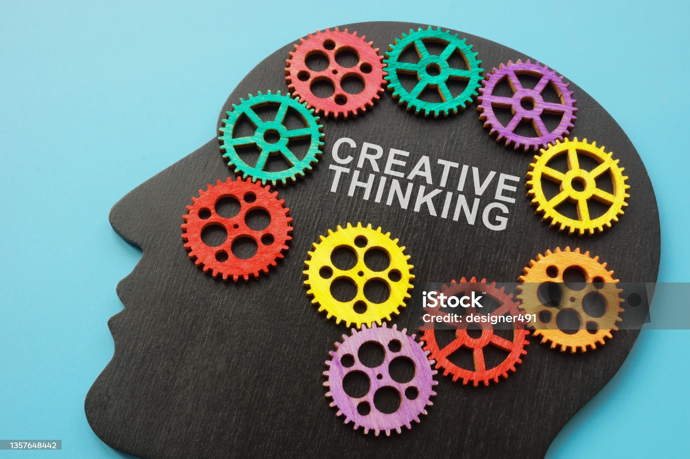

QUALITY EDUCATION
Education is a multifaceted concept that encompasses various processes and outcomes related to the transmission of knowledge, skills, and character traits. It involves both the act of teaching and the act of learning, occurring in formal, non-formal, and informal settings.Education plays a crucial role in building a smart person by enhancing cognitive abilities, fostering critical thinking, and promoting creativity. Here are some ways education contributes to this process:
- Education has been shown to improve cognitive abilities by
approximately 1 to 5 IQ points for each additional year of schooling.
This suggests that education can have a direct impact on intelligence.
- Cognitive skills such as memory, problem-solving, and logical reasoning
are developed through educational activities.

- Educational environments that encourage project-based learning and
critical thinking help students develop the ability to synthesize information
and discern new connections
- Creativity is fostered through diverse educational experiences, allowing
students to explore different sources of inspiration and engage in brainstorming activities
- Teachers can enhance intelligence by providing opportunities for students to solve complex
problems, which helps build strategic thinking skills
- Engaging in activities like robotics, science fairs, and service learning projects helps students
develop practical problem-solving abilities
- The habits of mind developed through education, such as persistence, curiosity, and
open-mindedness, are crucial for becoming smart
- These habits enable individuals to approach challenges with a mindset that is conducive
to learning and growth.
- Education provides a broad base of knowledge that serves as a foundation for further
learning and intellectual growth.
- Access to diverse information helps individuals understand the world better and make
informed decisions.